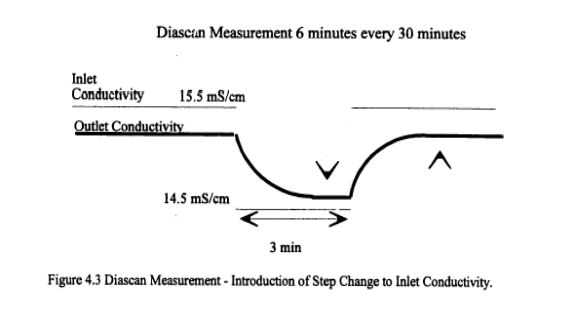
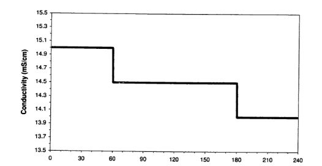
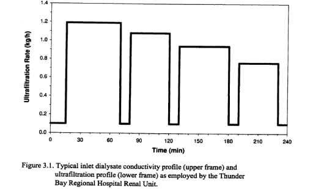
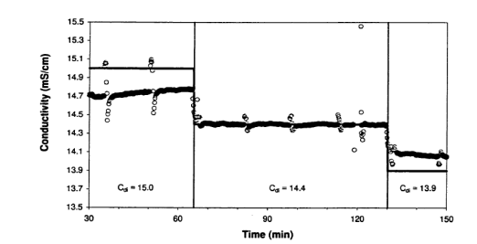
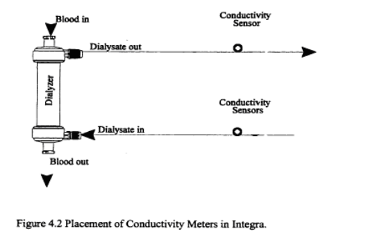
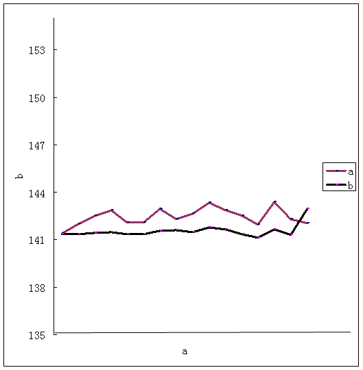

电导法监测透析中尿素清除率的方法探讨
摘要
目的:通过安装在透析器两端的电导探头，用电导率法测Kt/V取代传统抽取血液计算Kt/V，并成为联机尿素清除率监测（OCM）基本理论方法，用于国产JH－2000血液透析机的联机尿素清除率监测智能模块的研究根据临床数据的建模和规则化研究，为国产JH-2000血透机开发研制智能化控制的联机尿素清除率监测模块提供临床数据
方法:预计收集病例30名。男20名，女10名进入透析期5个月以上的患者被纳入该研究残余肾功能的影响忽略不计。通过安装在透析器两端的电导探头、利用公式K＝Qd∣Cdi-Cdo∣/∣Cdimax-Cdomin∣前瞻性分析血液侧计算得出的总KT/V，与用电导率法测量得出的总KT/V的相关性。分析影响KT/V的各种相关性因素，包括透析器种类，复用次数，透析膜的种类，体表面积，血流速度等
结果
结论
英文摘要:
前言:
一、抽血法及指标的概述
早期的血液透析，主要根据患者透析后的临床状况判断1985年美国国家协作透析研究会(national cooperative dialysis study，NCDS)提出以BUN作为衡量透析充分与否的小分子溶质清除指标。20世纪90年代对小分子物质的清除以尿素动力学模型（urea kinetic modeling，UKM） 研究较多，提出以尿素清除指数、Kt/V并配合蛋白分解率（protein catabolic rate，PRC）时间平均尿素浓度（time average concentration of urea，TACurea）、尿素清除率（urea reduction ratio ，URR）、溶质清除指数（solute removal index，SRI）作为评价指标。自应用尿素动力学模型来评价血透充分性,透析的质量确实得到了体现
关于Kt/ V评价透析的充分性,Gotch 和Sargent提出在常规每周三次的血透治疗中,Kt/ V 至少达到1. 2 ,透析器复用Kt/ V 达1. 3 , Kt/ V 每增加0. 1 ,则死亡率相对的降低7 %。当Kt/ V > 1 ,3 时,死亡率是否再会降低,尚无定论[9 ] K代表透析器对血尿素的清除率(升/ 分) ,T 为透析时间(分) ,V 代表尿素分布容积(升) 。这一原理是基于BUN 在透析过程中呈对数形式下降,这一对数下降的斜率为K/ V ,因此,为了得到这一斜率,需要有透析前与透析后的BUN。由Daugirdas 提供的较为精确而广泛使用的公式是:Kt/ V = - In(R - 0. 008 ×t) + (4 - 3. 5 ×R) ×UF/ W In :自然对数 R :透析后BUN/ 透析前BUN t :透析时间(小时) 0. 008 ×t : 透析过程中尿素生成量对Kt/ V影响 UF :超滤量(升) W:透析后体重(公斤) 它根据单室尿素动力学模型(single - pool UKM) 的原理[1 ] ,即:尿素在人体内混合良好、分布均匀,视体液为单室;溶质通过恒定的蛋白分解率持续地在单室内增加;溶质由残肾功能持续清除,由透析间断清除,根据血浆浓度遵循第一级程度原则清除。但是,越来越多的证据表明[2 ,3 ] ,用单室尿素动力学模型判断透析充分性存在许多不足,特别在高效高流量、透析时间较短时,尿素的动力学变化不能用简单的一室模型来判断。在透析结束后30～60min 存在尿素的反跳现象,这表明透析过程中尿素分布存在不均一性,由此产生了尿素分布的二室动力学模型( double - poolUKM) 。二室尿素动力学公式所得Kt/ Ve 比单室尿素动力学公式所得Kt/ Vsp 更加精确,更能反映实际的透析剂量。关于二室模型透析充分性的判断方法很多,基本上利用单室模型公式对透析后尿素浓度、透析时间、尿素分布容积或单室Kt/ V[4 ]作矫正,这些方法计算较复杂,临床应用价值不大。然而,血液侧的尿素动力模型存在着由于取血样本而致的各种问题,如盐水及肝素的污染[4 ] 、血管通路的再循环[4 ] ,心肺再循环[5 ]及尿素的反跳[6 ]等。许多已发表的文章并没有提及他们采集血样的方法。尽管有提及到采集方法,但每个作者所采集的步骤都不一样。由于取血样本缺乏统一标准,因此从各中心取得的Kt/ V 结果不能进行统一的统计处理。
联机尿素监测器(OCM) 的问世[5 ] ,解决了二室模型需抽多个血标本需复杂的数学运算难题,可使透析尿素动力学模型自动化,包括对多室模型必要的矫正。OCM的基本原理[6 ,7 ]是在透析器透析液出口端加装电导率探头,假设尿素与钠的清除系数是一致的,通过透析液离子(主要是钠离子) 在透析器中的清除来推算尿素的清除,其结果可靠[8 ] 。
二、当前联机监测尿素清除率的几种方法
（1）生物电极法
采用生物电极法制作的在线测量仪可独立于血透机进行测量，收集从透析器排除出来的废透析液进行尿素浓度的监测，故它可以真正测量透析液中清除的尿素浓度，仪器自动从废透析液中采样并使用尿素传感器测量。尿素传感器由铵电极和涂覆尿素酶的薄膜构成，尿素酶将尿素分解成氨和二氧化碳。氨通过透析膜后转换成铵离子，通过铵离子电极，可以实时测量废透析液中的尿素浓度。已知透析液流量，经过对时间的积分就可以得到真正的尿素清除。通过单超平衡过程，仪器还可以无创测得BUN浓度，能过内置的患者数据库，仪器还可提供Kt/V[12]
2）电导法
关于二室模型透析充分性的判断方法很多,基本上利用单室模型公式对透析后尿素浓度、透析时间、尿素分布容积或单室Kt/ V作矫正,这些方法计算较复杂,临床应用价值不大。联机尿素监测器(OCM) 的问世,解决了二室模型需抽多个血标本需复杂的数学运算难题,可使透析尿素动力学模型自动化,包括对多室模型必要的矫正。已成功应用于多个外国透析机型，效果良好。
三，利用电导法计算血液侧尿素氮清除率的研究进展：
1.联机尿素清除率监测(OCM-online clearning monitor）
OCM的基本原理是在透析器透析液出口端加装电导率探头,假设尿素与钠的清除系数是一致的,通过透析液离子(主要是钠离子) 在透析器中的清除来推算尿素的清除,其结果可靠。首先机器提高透析液的电导率，即增加浓缩液的吸入量，然后降低透析液的电导率，即减少浓缩液的吸入量，最后将透析液的电导率恢复测量前的水平，通过计算透析器前后的电导率的变化来计算尿素清除情况，这里假设尿素与钠的清除系数是一样的，能过测定电导（主要是钠离子浓度）换算出尿素清除率。OCM的尿素清除率计算方法：
K＝QDo（ΔCDi－ΔCDo）/Δ CDi。
其中K：尿素氮清除率，ΔCDi在透析器入口端电导率的差，ΔCDo透析器出口端的电导率差，QDo透析液流量。根据上述原理可见，这种模拟技术主要是通过透析液离子（主要是钠离子）在透析器中的清除来推算尿素清除。这种方法的好处是简单，争议较多的是这种方式测量的准确性。有许多意见相反的临床研究报道，如不同膜材料，钠离子与尿素分子的不同特性，血液侧与透析液侧离子浓度梯度等因素对测量准确性的影响。
{kind=link}
Fig. 1.因为透析液钠浓度处于相对安全的范围之内 (128–157 mmol/l)其变化脉冲不是完全的正负平衡 (baseline: 140.2 mmol/l, upper level 155 mmol/l, lower lever 132,5 mmol/l). 而其脉冲的进行及待续有赖于透析液流量 (here 540 ml/min).
2.Diascan动力模型
在DIASCAN动力模型中，透析液的电导率与总溶质的离子浓度相联系。通过以图X为模型透析液入口的电导变化，其相应透析液出口端电导的改变能提供一个物质总转运率的测量。依公式算出透析液溶质清除率:
Km=1一DCo/DCi
其中K 代表透析液离子清除率 ∆C代表透析液入口（i）及出口的电导（o）值 第一步将透析液入口电导率稳定并运行一段时间，第二步，每隔30分钟中断透析液离子供给，时间约为3MIN，这时透析液出口处电导会有一过性下降，其下降幅度可以做为计算离子清除率的基本数据。
透析液离子清除率可以计算出血液中的离子清除率，并可以做为Kt/V中的K值进行进一步的计算。在此动力模型中的V值由Watson's formula计算出，仅于每30分钟运行一次。此种计算方法相比于传统抽血法提供了更为方便有效的Kt/V运算方式。但其缺点是Kt/V值只能在透析结束时才能得出，如想在透析中间得到Kt/V值必须退出透析程序。但基于电导率的其它运算方法现在可以实现提供即时的K值。

3.基于电导率法的其它测量K值的方法：
随着透析中钠曲线及超滤曲线的应用，基于透析液电导变化，另一种能在透析过程中提供即时K值的方法已经出现。LAKEHEAD大学的学者观察到在病人运用阶梯渐降式钠曲线行血液透析时，放置于透析液出口的电导探测仪所测的电导与透析液入口存在差异，并与病人本身血液中钠浓度有关系。这种差异经过一定的数学处理，其对数变化趋势与透析时间（T）高度相关。
ln∣Cdi一Cdo∣=In∣Cdio一Cdoo∣－Dt/V
这里Cdi及Cdo为透析液入口及出口电导(mS/cm)，D为透析液离子清除率(ml/min),，V为病人的有效清除容积(ml)，T为透析时间(min)
运用这种相关性，可计算出其钠离子透析液清除率（D）。由于在37摄氏度时，钠与尿素氮的弥散系数几乎相等。用钠离子清除率（D）得出尿素氮清除率（K），并能在透析时的任何时刻得到即时的KTV值。其缺点为透析时必须使用阶梯渐降式钠曲线。而对于透析病人钠曲线长期应用是否会存在钠负荷过多，目前尚不能确定，有待长期多中心的进一步研究。



综上所述运用透析液中离子的转运来推算血液中小分子毒素的清除率的方法，已行之有效的应用于国外各大透析机机型中，并为全世界各血透中心的医务人员提供更为方便的充分性评价途径，归根结底造福了透析病人。但目前所运用的电导法
均依靠改变透析液入口电导浓度来实现入口与出口电导变化的放大效应，以期更为精确地记录其电导变化。这种透析液入口的改变是否会造成病人的不适及是否有其远期不良反应，如钠负荷过多，干体重上升，心血管功能变差等。虽然多个小样本的研究都证实，现有电导法监测透析中尿素清除率是十分安全有效的。但缺少大样本多中心研究，及长期观察。
我们在透析过程中发现，即使在维持透析液入口电导稳定的情况下，透析液出口电导仍存在一定的变化。经过一系列的公式推导，及数据分析，数学运算，得出公式D＝Qd∑∣Cdi-Cdo∣/∣Cdimax-Cdomin∣计算透析液离子清除率。
其中Cdi及Cdo为透析液入口及出口电导(mS/cm)，D为透析液离子清除率(ml/min),，V为病人的有效清除容积(ml)，T为透析时间(min) （推导过程见附件）
D＝Qd∑∣Cdi-Cdo∣/∣Cdimax-Cdomin∣
Dt/V＝∑ Q∣Cdi-Cdo∣/∣Cdimax-Cdomin∣
Q = [ Do/Di * Bo/Bi * (0.58 W + UF)/(0.58 W - UF)] ¸ P
Do: 实际透析液流量; Di标准透析液流量(ml/min);
Bo: 实际血流量; Bi: 标准血流量(ml/min);
P: 体表面积; UF:超滤量; UF:干体重;
如要即时得出
 ln∣∑Cdi-∑Cdo∣＝ln∣Cdimax-Cdomin∣+Dt/V
ln∣∑Cdi-∑Cdo∣＝ln∣Cdimax-Cdomin∣+Dt/V
(每隔一小时进行一次运算，但 数据要每隔十五分钟收集一次,计算机自动计算一次,并图表显示,最后联成Kt/V曲线图)
如要透析结束后得出的话
 ln∑Q∣Cdi-Cdo∣- ln∣Cdimax-Cdomin∣= Dt/V
ln∑Q∣Cdi-Cdo∣- ln∣Cdimax-Cdomin∣= Dt/V
Q =[Do/Di*Bo/Bi*(0.58W+UF)/(0.58W-UF)]¸（1.73/Po）
Cdi及Cdo为透析液入口及出口电导(mS/cm);
Do: 实际透析液流量; Di标准透析液流量(500ml/min);Bo: 实际血流量; Bi: 标准血流量(255ml/min);Po: 实际体表面积; UF:超滤量; UF:干体重;
材料方法
研究对象：
研究对象选择年，月在暨南大学附属第一医院血液净化中心进行维持性血液透析治疗的患者，共30例，患者无尿，残余肾功能＜1.5ml/min。原发病为慢性肾小球肾炎；例，高血压肾病；例，糖尿病肾病；例，多囊肾；例，醒阴性肾病；例，其中男性；例，女性；例，平均年龄多少岁，患者维持性血液透析时间4－243周，每周透析二到三次，每次四小时，采用动静脉内瘘或人造管，及深静脉置管做为血管通路。。在进入实验前1个月的时间里，所有患者都不存在水肿、心包积液、胸腔积液、腹腔积液或心衰等己知的存在水储留的临床证据
治疗方法:
透析条件：所有病人利用暨华JH2000透析机进行普通透析，在通过连接在透析液入口及出口的电导探测器进行数据收集。透析器用F6（面积1.2M2，聚砜膜），透析器复用，若透析器冲洗后血室容积小于原来的80%或有破膜者弃用，常规复用6次。血流量220－250MLMIN，进行碳酸氢盐透析治疗，透析液电解质浓度：NA140mmol/L,k:2.0 mmol/L;Ca1.5mmol/L;Bicarbonate mmol/L:28;Mg:0.5 mmol/L;Glu:0 mmol/L.透析液流量：500ml/min.每次透析4小时。
抗凝方式：全身普通肝素抗凝，首次剂量0.4mg/kg,追加剂量5-10mg/kg,同时根据透析结束时透析器凝血情况调整肝素剂量
采血方法
1.透前，进针后立即从瘘管针采血样本，针不要预冲，如瘘管针预冲或通过留置导管透析，先抽出10ml血，再收集血样本，以免污染。
2.透后，透析后样本被再循环或回血生理盐水污染，将过高估计透析剂量。应在透析结束时，将超滤率设置为零，血流量减至50-100ml/min,10秒钟后，从动脉端瘘管针采血3ml。
实验仪器：本研究采用的是中国广州暨华医疗器械有限公司提供的暨华JG－2000型号透析机，及电导探测仪。在透析液入透析器端及出透析器端安装电导探测仪，安装简图见图（）其中，透析机体内电导仪与实验用两个电导仪每二次观察周期校正一次。两个实验用电导仪之间，每次观察前校正。所得电导结果以ms/cm为单位，精度为0.01ms/cm。
患者体重的测量采用的是电子体重计，测量精度为0.1千克（kg）
身高的测量采用是常规身高测量仪，测量精度为1公分（cm）
实验方法: 所有病人进行碳酸氢盐透析治疗，血流量220－250 ml/min,，透析液流量500，透析用其它参数见透析条件。透析过程中，电导保持相对稳定（139－142之间）。首先患者在透析前后测量并记录体重，透析前测量身高。患者在透析前后均要抽取血样进行生化和电解质检查。进入透析后每半个小时记录血压，心率，不良反应，及干预措施。对于本实验的主要观察指标，透析机开机后，进入预冲状态并且使电导稳定，在不接透析器时每5分钟观察一分钟，记录透析液入口及出口电导最大最小值，共记录2次。接透析器行冲管程序后，每5分钟记录一次透析液入口及出口电导，共记录2次。以透析机连接病人成功引血起，为正式进入透析状态。在透析状态中，每15分钟连续观察电导1分钟，记录透析器入口及出口电导最大值及最小值。在记录电导同时，观察时同时记录跨膜压及静脉压。透析时长四小时，共记录数据16次，共90个数值。
监测指标：
透前体重，透后体重，身高，生命体征，主观症状，透析治疗时间，血管通路，透析器型号，复用次数，血流速度，透析液流速，实际超滤量，体表面积，基础电导（机面设置的电导数）
数据计算：
首先按照，Watson公式(公式I)13J，计算出透析前后患者总体水(TBW-W)的容量TBW女性＝-2.097 + 0.1069 x L + 0.2466 男:性＝2.447一0.09516- Y +0.1074- L +0.3362-Wt
公式中L是身高(cm), wt是体重(Kg), Y是年龄(岁)
以公式D＝Qd∣Cdi-Cdo∣/∣Cdimax-Cdomin∣
计算透析液离子清除率。其中Cdi及Cdo为透析液入口及出口电导(mS/cm)，D为透析液离子清除率(ml/min),，V为病人的有效清除容积(ml)，T为透析时间(min) （推导过程见附件）
数据统计:
所有测得量和计算值都用均数士标准差的形式表示。使用SPSS 11.0统计软件，分别对各组数据进行配对T检验，用P＜0.05作为统计学有显著性差异。并利用回归分析方法寻找电导法计算所得的KTV与传统抽血法所计算的KTV之间的关系。
结果
显著差异性
讨论
结论
下一步计划和不足之处
参考文献
